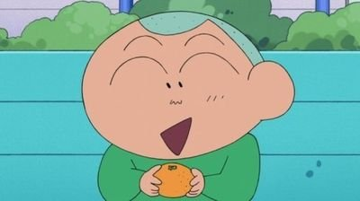

녹색
옷장에 녹색 옷이 많은 사람은 인정욕구가 강한 경향이 있다. 외로움을 많이 타기 때문에 다른 사람들에게 인정받기 위해 많이 노력한다. 보통 사람에 비해 손재주가 있는 편이다.
옷장에 녹색 옷이 많은 사람은 인정욕구가 강한 경향이 있다. 외로움을 많이 타기 때문에 다른 사람들에게 인정받기 위해 많이 노력한다. 보통 사람에 비해 손재주가 있는 편이다.
완벽주의자 기질이 다분하다. 뭘 하든 적당히 하는 법이 없다. 한 번 시작하면 A부터 Z까지 정석대로 꼼꼼하게 일을 마무리하는 스타일이다.

천진난만한 성격이다. 다른 사람으로부터 스트레스를 받지 않고 자신이 원하는 대로 인생을 산다. 다양한 분야에 도전하는 것을 좋아하며 실패해도 크게 실망하지 않는다.

기본적으로 튀는 걸 좋아한다. 패션에 민감하지만 유행처럼 번진 것에는 관심이 없다. 경쟁심이 있어 자신보다 더 튀는 사람을 질투한다.

자신감이 충만한 사람이다. 외모와 실력 모두에 자신이 있어 언제나 당당하게 행동한다. 승부욕이 꽤나 강한 편이다.

자신의 실력이나 감정을 보이는 걸 좋아하지 않는 성격이다. 타인의 시선을 신경쓰기에 최선을 다해 일하는 편이다.

창의적이고 개성이 넘친다. 예술이나 문학 분야에서 두각을 나타내는 경우가 많다. 좋아하는 일에는 높은 집중력을 보인다.

생각이 깊은 편이다. 심리적으로 안정된 상태로 조용하고 타인을 배려하는 심성을 가졌다. 상대방에게 자신을 잘 맞추는 스타일이다.